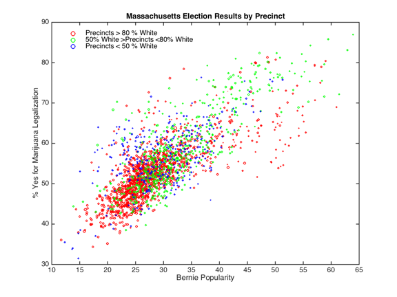

In 2016, the state voted on a ballot measure to legalize marijuana. Marijuana legalization vote in an election precinct did not follow a simple partisan pattern, though was modestly correlated to the Democratic vote of share of a place in 2012, with an R2 = 0.43. Many of the more affluent Boston suburbs where Trump did badly voted against marijuana legalization; while reverse was true for some areas that became more Republican. This simple map marks:
Also a good example of why election maps can be misleading; the actual result was a narrow in but appears Blue + Orange is the vast majority of the state, especially if one knows the Boston and adjacent cities are in the blue region. Most of the Green aren't areas that are particularly friendly Democrats (by Massachusetts standards) in "normal" election years. Probably also tended to be older; the Cape in particular has lots of older retirees. The map may also might get one the misleading result that since more Trump voting areas voting for marijuana legalization, Trump voters tended to vote for marijuana legalization.
Here's a scatter plot showing how weell different groupings voted. In the purple and dark brown precincts [referring to the scatter plot colors, not the colors in the above map], which were more Democratic in 2016, marijuana legalization didn't do particularly well. You can see the correlation was tighter in 2012.
Going through a number of different variables, I found the best predictor of voting yes was a variable I named "Bernie Popularity"; the product of Bernie Sanders vote. The outliers to the upper left of the main fit are either non-white or rich Boston area districts that were socially liberal but didn't like Bernie much. The red dot to that score high in Bernie Popularity but not that very high for marijuana legalization are liberal rural Western Massachusetts areas with lots of older voters. The very upper right are college areas (Amherst & Northampton, Boston near BU & Northeastern, parts of Cambridge / Somerville). I colored the map by raceas there was a clear racial pattern that was independent of partisanship
I also made a zoomable map of the ballot results, placed it a separate page as it is rather large